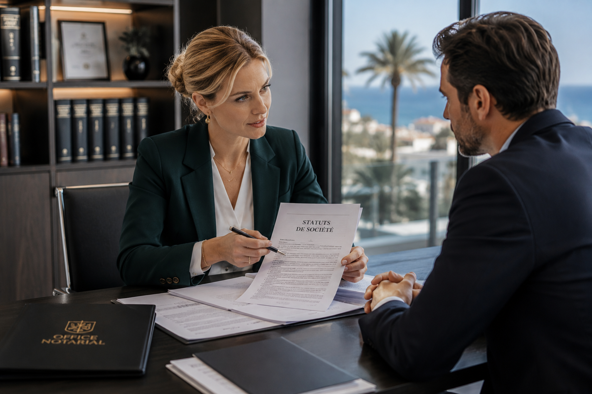

Entreprises · Dirigeants · Investisseurs
Droit des sociétés et des entreprises
Une approche juridique, fiscale et patrimoniale au service des entrepreneurs et de leurs projets professionnels.
Accompagnement des entreprises
Sécuriser chaque étape de la vie de l’entreprise
L’office accompagne les chefs d’entreprise, professions libérales, commerçants, investisseurs et groupes familiaux dans la création, la structuration, la gestion et la transmission de leurs activités professionnelles.
Notre intervention permet d’appréhender les enjeux juridiques, fiscaux, patrimoniaux et familiaux attachés à l’entreprise, afin de construire des solutions cohérentes, sécurisées et adaptées aux objectifs du dirigeant.

Créer et structurer
Création de société
Le choix de la structure juridique constitue une étape déterminante dans la réussite d’un projet entrepreneurial ou patrimonial.
Nous vous accompagnons dans la constitution et l’organisation de sociétés adaptées à vos objectifs : SCI, SAS, SARL, holdings, sociétés patrimoniales ou structures dédiées à une opération spécifique.
- Choix de la forme sociale
- Rédaction des statuts
- Organisation des pouvoirs
- Anticipation des conséquences fiscales et patrimoniales
Faire évoluer
Vie sociale et opérations courantes
La vie d’une société impose régulièrement des ajustements juridiques : changement de dirigeant, modification statutaire, augmentation de capital, réduction de capital ou évolution de l’actionnariat.
L’office vous assiste dans la rédaction des actes et la sécurisation des décisions sociales afin de préserver la conformité et la stabilité de votre structure.
- Modifications statutaires
- Décisions d’associés
- Entrée ou sortie d’associés
- Opérations sur capital
Transmettre et céder
Cession de titres et transmission d’entreprise
La cession ou la transmission d’une entreprise nécessite une préparation minutieuse, tant sur le plan juridique que fiscal.
Nous accompagnons les dirigeants, associés et repreneurs dans la sécurisation des opérations portant sur les parts sociales, actions ou droits sociaux, en lien avec les conseils habituels de l’entreprise.
- Cession de parts sociales et d’actions
- Transmission familiale de l’entreprise
- Garantie d’actif et de passif
- Pacte Dutreil et stratégie de transmission
Commerce et activité
Fonds de commerce et baux commerciaux
La cession ou l’acquisition d’un fonds de commerce implique l’analyse du bail, de l’activité, des garanties, des autorisations et des risques attachés à l’exploitation.
L’office accompagne vendeurs, acquéreurs et commerçants dans la préparation et la sécurisation de leurs opérations professionnelles.
- Cession et acquisition de fonds de commerce
- Location-gérance
- Baux commerciaux
- Garanties et conditions suspensives
Structurer
Holding et organisation patrimoniale
La holding peut constituer un outil pertinent de structuration, de développement et de transmission du patrimoine professionnel.
Nous étudions avec vous l’intérêt d’une organisation adaptée à votre situation, en intégrant les dimensions fiscales, familiales, patrimoniales et entrepreneuriales.
- Holding familiale ou patrimoniale
- Apport de titres
- Organisation de groupe
- Préparation de la transmission
Conseil global
Accompagnement du chef d’entreprise
Le patrimoine professionnel et le patrimoine personnel du dirigeant sont souvent étroitement liés.
Notre approche vise à coordonner la stratégie de l’entreprise avec les objectifs familiaux et patrimoniaux du chef d’entreprise : protection du conjoint, transmission aux enfants, préparation de la retraite ou organisation successorale.
- Protection du dirigeant et de sa famille
- Transmission patrimoniale
- Immobilier professionnel
- Coordination avec avocats, experts-comptables et conseils
« Une entreprise se construit avec ambition. Elle se sécurise avec méthode. »
Échanger sur votre projetContact
Office Notarial de Cagnes-sur-Mer
Nous vous recevons à l’office ou à distance pour étudier votre projet professionnel.
73 Avenue de la Gare
06800 Cagnes-sur-Mer
04 15 54 13 53
morozof.jordan@notaires.fr